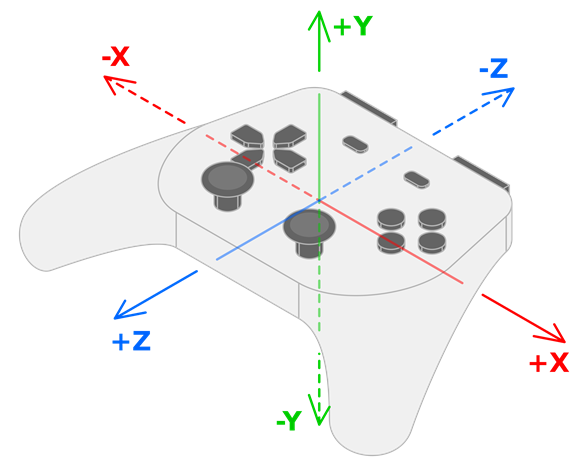

Tính năng của tay cầm
Godot hỗ trợ các tính năng riêng của tay cầm có thể nâng cao hơn nữa trải nghiệm chơi. Trang này mô tả các tính năng đó, cách các trò chơi hiện có đã sử dụng chúng, và cách bạn có thể bắt đầu dùng chúng trong Godot.
Cảnh báo
Các tính năng tay cầm này hiện chỉ được hỗ trợ trên Windows, macOS, iOS và Linux.
Cảnh báo
Trừ khi bạn quảng bá rõ rằng trò chơi của mình yêu cầu những tay cầm cụ thể, hãy nhớ rằng không có gì đảm bảo người chơi sẽ có tay cầm với bất kỳ tính năng nào đó.
Vì vậy, chúng tôi khuyên bạn dùng các tính năng này để nâng cao trải nghiệm chơi cho những người chơi có tay cầm hỗ trợ, mà không làm giảm trải nghiệm của những người không có tay cầm đó.
Màu đèn LED
Trò chơi có thể dùng đèn LED trên một số tay cầm để bổ trợ một cách tinh tế cho gameplay trên màn hình, bằng cách tạo ra hiệu ứng hình ảnh tương ứng ngay trong tay người chơi. Dưới đây là một số ví dụ đáng chú ý:
Trong Hades, màu đèn khớp với vị thần mà bạn đang nhận ân huệ.
Trong Resident Evil 2, màu đèn cho biết lượng máu của bạn (xanh lá khi đầy, vàng khi trung bình, đỏ khi thấp).
Trong Star Wars Jedi: Fallen Order, màu đèn khớp với màu kiếm ánh sáng của bạn.
Dùng phương thức Input.set_joy_light() để đặt màu đèn LED của một tay cầm.
Để xác định một tay cầm có hỗ trợ đặt đèn LED hay không, hãy dùng phương thức Input.has_joy_light(). Tay cầm PlayStation DualShock và DualSense được biết là có hỗ trợ đèn LED.
Phương thức _process() sau đặt màu LED theo nút đang được nhấn, và tắt đèn nếu không có nút nào được nhấn:
func _process(_delta):
var color := Color.BLACK
if Input.is_joy_button_pressed(0, JOY_BUTTON_A):
color = Color.BLUE
elif Input.is_joy_button_pressed(0, JOY_BUTTON_X):
color = Color.MAGENTA
elif Input.is_joy_button_pressed(0, JOY_BUTTON_B):
color = Color.RED
elif Input.is_joy_button_pressed(0, JOY_BUTTON_Y):
color = Color.GREEN
Input.set_joy_light(0, color)
Ví dụ sau làm đèn LED chuyển dần mượt mà qua các sắc màu theo vòng lặp:
var hue = 0.0
func _process(delta):
var col = Color.from_hsv(hue, 1.0, 1.0)
Input.set_joy_light(0, col)
hue += delta * 0.1
Ví dụ sau làm đèn LED nháy đỏ ba lần khi nút phía nam (Cross/X trên tay cầm PlayStation) được nhấn:
var blink_tween: Tween = null
func _process(_delta):
var ready_to_blink = not blink_tween or not blink_tween.is_running()
if Input.is_joy_button_pressed(0, JOY_BUTTON_A) and ready_to_blink:
do_blink()
func do_blink():
if blink_tween:
blink_tween.kill()
blink_tween = create_tween()
blink_tween.tween_callback(func(): Input.set_joy_light(0, Color.RED))
blink_tween.tween_interval(0.2)
blink_tween.tween_callback(func(): Input.set_joy_light(0, Color.BLACK))
blink_tween.tween_interval(0.2)
blink_tween.set_loops(3)
Cảm biến chuyển động (con quay hồi chuyển và gia tốc kế)
Với điều khiển bằng chuyển động, trò chơi có thể theo dõi chuyển động và độ xoay vật lý của tay cầm. Có thể dùng điều này để cho người chơi xoay camera trong game bằng cách di chuyển tay cầm, hoặc lắc tay cầm để thực hiện một hành động đặc biệt.
Có nhiều hãng tay cầm đã tích hợp cảm biến con quay hồi chuyển và gia tốc kế vào các tay cầm hiện đại của họ, lớn nhất là PlayStation và Nintendo. Lưu ý rằng tay cầm Xbox không có cảm biến chuyển động bên trong.
Để kiểm tra tay cầm đang kết nối có cảm biến chuyển động hay không, hãy dùng Input.has_joy_motion_sensors().
Cảm biến chuyển động bị tắt theo mặc định để tránh hao pin tay cầm khi trò chơi không dùng đến các tính năng đó. Để bật chúng, hãy gọi Input.set_joy_motion_sensors_enabled().
Lưu ý rằng các trục của giá trị mà cảm biến chuyển động của tay cầm báo về luôn tương đối so với hướng tự nhiên của tay cầm. Đây là hình minh họa ánh xạ các trục để bạn dễ hình dung:

Giá trị con quay hồi chuyển của tay cầm thể hiện độ xoay quanh các trục tương ứng:
giá trị X của dữ liệu con quay hồi chuyển thể hiện độ xoay quanh trục X (pitch).
giá trị Y của dữ liệu con quay hồi chuyển thể hiện độ xoay quanh trục Y (yaw).
giá trị Z của dữ liệu con quay hồi chuyển thể hiện độ xoay quanh trục Z (roll).
Gia tốc kế của tay cầm sẽ cung cấp giá trị lần lượt theo các cách sau:
Chuyển động sang trái và sang phải được báo là +X và -X.
Chuyển động xuống và lên được báo là +Y và -Y.
Chuyển động ra xa và lại gần người dùng được báo là +Z và -Z.
Con quay hồi chuyển
Con quay hồi chuyển (gyroscope) là một loại cảm biến phát hiện độ xoay của tay cầm. Dưới đây là một số ví dụ đáng chú ý về việc dùng con quay hồi chuyển trong game:
Trong Helldivers 2, Horizon Forbidden West, Star Wars: Dark Forces Remaster và Fortnite, việc nghiêng tay cầm khiến camera xoay theo ("gyro aiming"). Video này của *Daven On The Moon* minh họa và thảo luận chi tiết hơn về gyro aiming.
Trong Death Stranding, có thể dỗ BB bằng cách xoay nhẹ tay cầm.
Ví dụ sau xoay một đối tượng bằng cảm biến con quay hồi chuyển của tay cầm. Bạn cũng có thể xem ví dụ này trong tài liệu của Input.start_joy_motion_sensors_calibration().
const GYRO_SENSITIVITY = 10.0
func _ready():
# In this example we only use the first connected joypad (id 0).
if 0 not in Input.get_connected_joypads():
return
if not Input.has_joy_motion_sensors(0):
return
# We must enable the motion sensors before using them.
Input.set_joy_motion_sensors_enabled(0, true)
# (Tell the users here that they need to put their joypads on a flat surface and wait for confirmation.)
# Start the calibration process.
calibrate_motion()
func _process(delta):
# Only move the object if the joypad motion sensors are calibrated.
if Input.is_joy_motion_sensors_calibrated(0):
move_object(delta)
func calibrate_motion():
Input.start_joy_motion_sensors_calibration(0)
# Wait for some time.
await get_tree().create_timer(1.0).timeout
Input.stop_joy_motion_sensors_calibration(0)
# The joypad is now calibrated.
func move_object(delta):
var node: Node3D = ... # Put your object here.
var gyro := Input.get_joy_gyroscope(0)
node.rotation.x -= -gyro.y * GYRO_SENSITIVITY * delta # Use rotation around the Y axis (yaw) here.
node.rotation.y += -gyro.x * GYRO_SENSITIVITY * delta # Use rotation around the X axis (pitch) here.
Lưu ý rằng trước khi dùng dữ liệu của con quay hồi chuyển, ta phải hiệu chuẩn nó trước bằng cách gọi Input.start_joy_motion_sensors_calibration() và Input.stop_joy_motion_sensors_calibration(). Đó là vì các con quay hồi chuyển hiện đại thường cần được hiệu chuẩn. Điều này giống như một chiếc cân có thể cần hiệu chuẩn để biết đâu là "số không". Cũng như cân, chỉ con quay hồi chuyển được hiệu chuẩn đúng mới cho kết quả đo chính xác. Trong quá trình hiệu chuẩn, người dùng đặt tay cầm xuống một mặt phẳng. Tay cầm khi đó sẽ xác định các giá trị mà con quay hồi chuyển báo về khi nó thực sự hoàn toàn không chuyển động (gọi là "bias"), và dùng thông tin này để làm cho dữ liệu xoay chính xác hơn.
Xem bài viết trên GyroWiki để biết cách dùng đầu vào con quay hồi chuyển như một con chuột.
Sau khi con quay hồi chuyển của tay cầm đã được bật và hiệu chuẩn đúng, bạn có thể đọc các giá trị nó báo về bằng Input.get_joy_gyroscope().
Gia tốc kế
Cảnh báo
Không dùng dữ liệu gia tốc kế để tìm vị trí của tay cầm trong không gian 3D; nhìn chung gia tốc kế không đủ chính xác cho việc này.
Gia tốc kế (accelerometer) là một loại cảm biến phát hiện gia tốc của tay cầm theo đơn vị m/s². Ví dụ, nó có thể phát hiện người chơi nhanh chóng nâng tay cầm lên, di chuyển nó sang một bên, hoặc lắc nó.
Theo mặc định, gia tốc mà gia tốc kế phát hiện bao gồm cả trọng lực. Để lấy chỉ gia tốc do người dùng tạo ra, hãy trừ trọng lực khỏi gia tốc phát hiện được:
Input.get_joy_accelerometer(device) - Input.get_joy_gravity(device)
Do cách gia tốc kế hoạt động về mặt vật lý, sau khi chuyển động theo một hướng dừng lại, chúng gần như ngay lập tức báo về chuyển động theo hướng ngược lại. Sau khi phát hiện chuyển động theo một hướng, bạn có thể muốn bỏ qua các lần đọc tiếp theo trong một khoảng thời gian ngắn để tránh phát hiện chuyển động ngược này.
Ví dụ sau in ra chuyển động của tay cầm khi nó bị di chuyển nhanh, bằng cách dùng gia tốc kế. Nếu bạn thấy độ nhạy chưa phù hợp, bạn có thể tinh chỉnh hằng số THRESHOLD hoặc thay nó bằng một giá trị khác trong đoạn mã dưới đây.
var detect_accelerometer = true
# Change to make the game detect movement at different thresholds.
# With a lower value, smaller movements will be detected, and with a
# larger value, only big movements will be detected.
const THRESHOLD = 10.0
func _ready():
# In this example, we only use the first connected joypad (ID 0).
if 0 not in Input.get_connected_joypads():
return
if not Input.has_joy_motion_sensors(0):
return
# We must enable the motion sensors before using them.
Input.set_joy_motion_sensors_enabled(0, true)
func _process(delta):
if Input.has_joy_motion_sensors(0):
accelerometer_example()
func accelerometer_example():
if not detect_accelerometer:
return
var acceleration = Input.get_joy_accelerometer(0) - Input.get_joy_gravity(0)
if acceleration.length() > THRESHOLD:
if acceleration.x > THRESHOLD:
print("Moved left")
elif acceleration.x < -THRESHOLD:
print("Moved right")
if acceleration.y < -THRESHOLD:
print("Moved up")
elif acceleration.y > THRESHOLD:
print("Moved down")
if acceleration.z < -THRESHOLD:
print("Moved closer to the player")
elif acceleration.z > THRESHOLD:
print("Moved away from the player")
# After detecting movement in one direction, the accelerometer sensor
# will briefly report movement in the opposite direction, even though the controller only moved once.
# So we need to ignore these reported values for a short amount of time.
detect_accelerometer = false
await get_tree().create_timer(0.5, false).timeout
detect_accelerometer = true